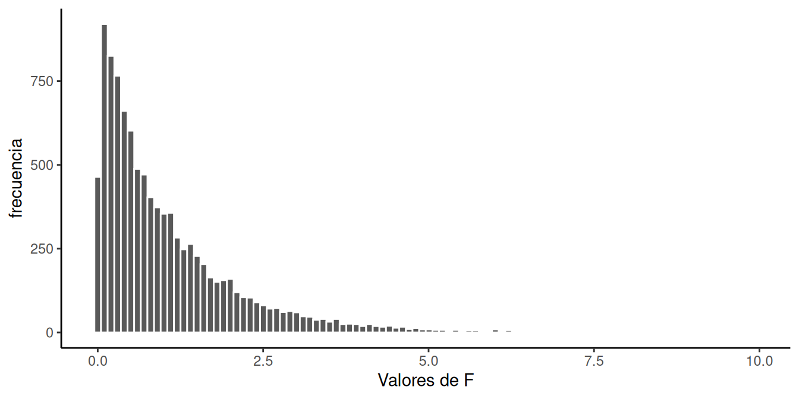
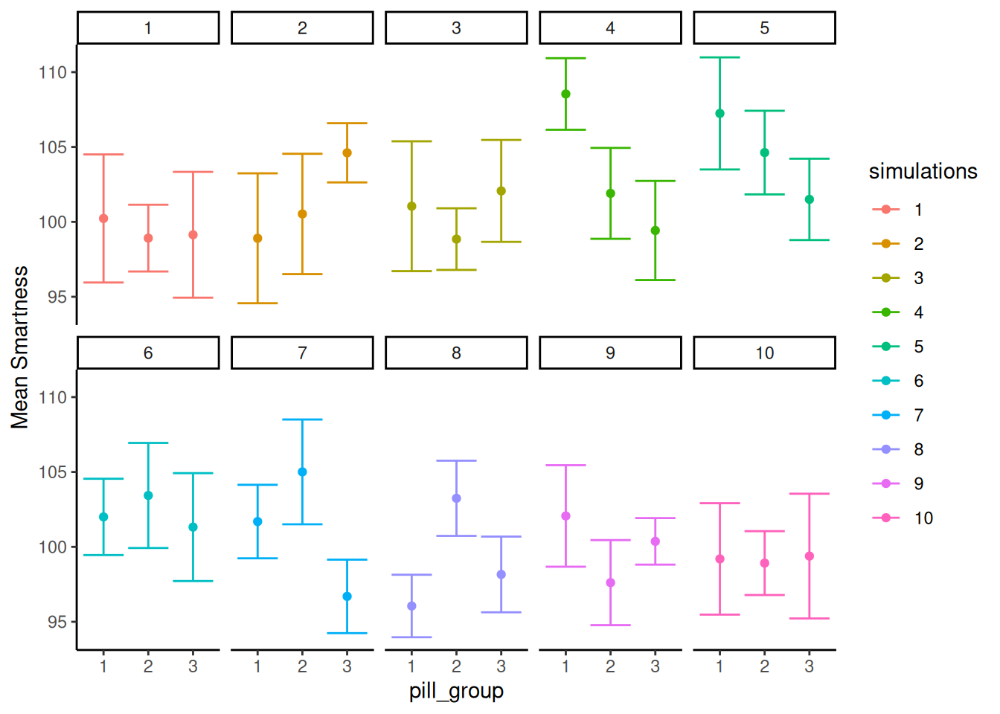
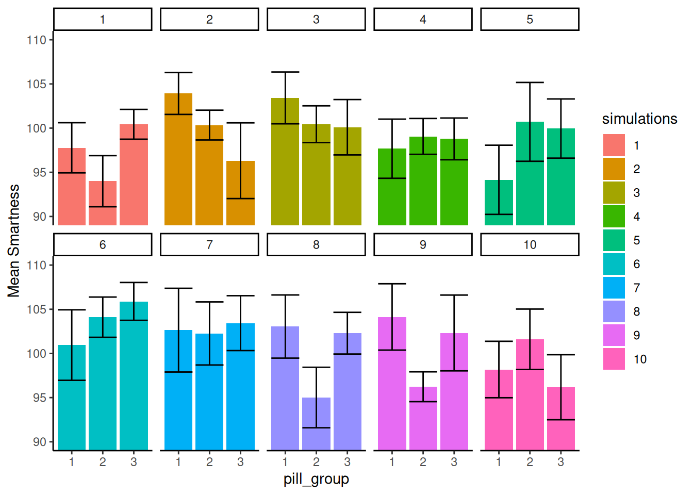
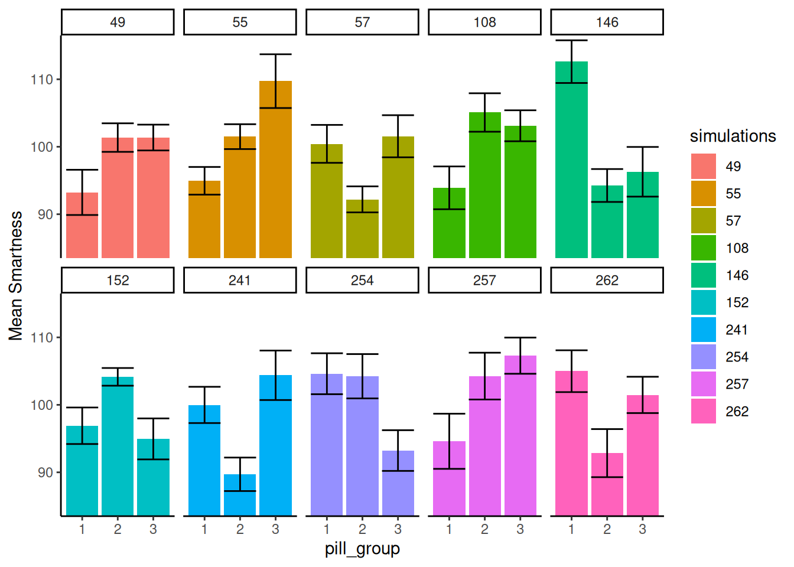
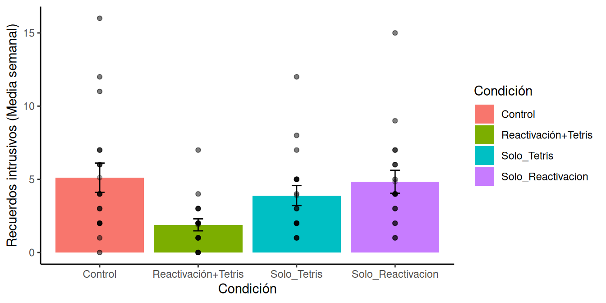

| groups | scores | diff | diff_squared |
|---|---|---|---|
| A | 20 | 13 | 169 |
| A | 11 | 4 | 16 |
| A | 2 | -5 | 25 |
| B | 6 | -1 | 1 |
| B | 2 | -5 | 25 |
| B | 7 | 0 | 0 |
| C | 2 | -5 | 25 |
| C | 11 | 4 | 16 |
| C | 2 | -5 | 25 |
| Sums | 63 | 0 | 302 |
| Means | 7 | 0 | 33.5555555555556 |
9 ANOVA
Un dato curioso de la historia de la estadística [@salsburg2001lady]. Sir Ronald Fisher inventó el ANOVA, que aprenderemos en esta sección. Quería publicar su nueva prueba en la revista Biometrika. El editor en ese momento era Karl Pearson (¿recuerdas la \(r\) de Pearson para la correlación?). Aparentemente, Pearson y Fisher no se llevaban bien; no se agradaban. Pearson se negó a publicar la nueva prueba de Fisher. Así que, finalmente, Fisher publicó su trabajo en el Journal of Agricultural Science. Curiosamente, la enemistad continuó en la siguiente generación. Años después de que Fisher publicara su ANOVA, el hijo de Karl Pearson, Egon Pearson, y Jersey Neyman renovaron las ideas de Fisher y las reformularon en lo que comúnmente se conoce como prueba de hipótesis nula frente a alternativa. A Fisher no le gustó mucho esto.
Presentamos el ANOVA en el sentido fisheriano y, al final, describimos el enfoque de Neyman-Pearson que invoca el concepto de hipótesis nula frente a hipótesis alternativa.
9.1 ANOVA es Análisis de Varianza
ANOVA significa Análisis de Varianza. Es una técnica ampliamente utilizada para evaluar la probabilidad de que las diferencias encontradas entre las medias en datos muestrales puedan ser producidas por el azar. Podrías estar pensando, bueno, ¿no tenemos las pruebas \(t\) para eso? ¿Por qué necesitamos el ANOVA? ¿Qué nos aporta de nuevo que no tuviéramos antes?
Lo nuevo del ANOVA es la capacidad de probar un rango más amplio de medias, más allá de solo dos. En todos los ejemplos de pruebas \(t\), siempre comparábamos dos cosas. Por ejemplo, podíamos preguntarnos si la diferencia entre dos medias muestrales podría haber sido producida por el azar. ¿Qué pasaría si nuestro experimento tuviera más de dos condiciones o grupos? Tendríamos más de dos medias. Tendríamos una media para cada grupo o condición. Eso podría ser mucho, dependiendo del experimento. ¿Cómo compararíamos todas esas medias? ¿Qué deberíamos hacer, realizar muchas pruebas \(t\), comparando cada combinación posible de medias? En realidad, podrías hacer eso. O podrías hacer un ANOVA.
En la práctica, combinaremos tanto la prueba ANOVA como las pruebas \(t\) al analizar datos con muchas medias muestrales (de más de dos grupos o condiciones). Al igual que la prueba \(t\), existen diferentes tipos de ANOVA para diferentes diseños de investigación. Hay uno para diseños entre-sujetos y uno ligeramente diferente para diseños de medidas repetidas. Hablaremos de ambos, comenzando con el ANOVA para diseños entre-sujetos.
9.2 ANOVA de un factor
El ANOVA de un factor también se denomina a veces ANOVA entre-sujetos, ANOVA de factor independiente o ANOVA de una vía (lo cual es un nombre algo inapropiado, como discutiremos más adelante). El ingrediente fundamental para un ANOVA de un factor entre-sujetos es que tienes una variable independiente, con al menos dos niveles. Cuando tienes una VI con dos niveles, puedes realizar una prueba \(t\). También puedes realizar un ANOVA. Curiosamente, te dan resultados casi idénticos. Obtendrás un valor \(p\) idéntico en ambas pruebas (en el fondo, realmente están haciendo lo mismo). La prueba \(t\) proporciona un valor \(t\) como el estadístico muestral importante. El ANOVA te da el valor \(F\) (por Fisher, el inventor de la prueba) como el estadístico muestral importante. Resulta que \(t^2\) es igual a \(F\) cuando solo hay dos grupos en el diseño. Son la misma prueba. Nota al margen, resulta que todos están relacionados también con la r de Pearson (pero aún no hemos escrito sobre esta relación en este libro de texto).
Recuerda que \(t\) se calcula directamente a partir de los datos. Es como una media y un error estándar que medimos de la muestra. De hecho, es la diferencia de medias dividida por el error estándar de la muestra. Es solo otro estadístico descriptivo, ¿no es así?
Lo mismo ocurre con \(F\). \(F\) se calcula directamente a partir de los datos. De hecho, la idea detrás de \(F\) es la misma idea básica que se utiliza para \(t\). Aquí está la idea general detrás de la fórmula; es nuevamente una razón entre el efecto que estamos midiendo (en el numerador) y la variación asociada con el efecto (en el denominador).
\(\text{name of statistic} = \frac{\text{measure of effect}}{\text{measure of error}}\)
\(\text{F} = \frac{\text{measure of effect}}{\text{measure of error}}\)
La diferencia con \(F\) es que usamos varianzas para describir tanto la medida del efecto como la medida del error. Por lo tanto, \(F\) es una razón de dos varianzas.
Recuerda lo que dijimos sobre cómo funcionan estas razones. Cuando la varianza asociada con el efecto es del mismo tamaño que la varianza asociada con el error de muestreo, obtendremos dos números iguales, lo que resultará en un valor \(F\) de 1. Cuando la varianza debida al efecto es mayor que la varianza asociada con el error de muestreo, entonces \(F\) será mayor que 1. Cuando la varianza asociada con el efecto es menor que la varianza asociada con el error de muestreo, \(F\) será menor que uno.
Reescribámoslo en un lenguaje más sencillo. Estamos hablando de dos conceptos que nos gustaría medir a partir de nuestros datos: 1) una medida de lo que podemos explicar, y 2) una medida de error, o cosas sobre nuestros datos que no podemos explicar. Entonces, la fórmula de \(F\) se ve así:
\(\text{F} = \frac{\text{Can Explain}}{\text{Can't Explain}}\)
Cuando podemos explicar tanto como no podemos explicar, \(F\) = 1. Esta no es una situación muy buena para nosotros. Significa que tenemos mucha incertidumbre. Cuando podemos explicar mucho más de lo que no podemos, estamos haciendo un buen trabajo, y \(F\) será mayor que 1. Cuando podemos explicar menos de lo que no podemos, realmente no podemos explicar mucho, y \(F\) será menor que 1. Ese es el concepto detrás de la creación de \(F\).
Si vieras un \(F\) en la naturaleza y fuera de 0.6, sabrías automáticamente que los investigadores no pudieron explicar gran parte de sus datos. Si vieras un \(F\) de 5, entonces sabrías que los investigadores pudieron explicar 5 veces más de lo que no pudieron, eso es bastante bueno. Y el objetivo de esto es darte una intuición sobre el significado de un valor \(F\), incluso antes de que sepas cómo calcularlo.
9.2.1 Calculando el valor F
El ANOVA de Fisher es muy elegante en mi opinión. Nos presenta un gran problema que siempre tenemos con los datos. Tenemos muchos números, y hay mucha variación en ellos, ¿qué hacer? ¿No sería bueno dividir la variación en dos tipos o fuentes? Si pudiéramos saber qué partes de la variación son causadas por nuestra manipulación experimental y qué partes son causadas por el error de muestreo, estaríamos progresando mucho. Podríamos saber si nuestra manipulación experimental está causando más cambio en los datos que el error de muestreo o el puro azar. Si pudiéramos medir esas dos partes de la variación total, podríamos hacer una razón y entonces tendríamos un valor \(F\). Esto es lo que hace el ANOVA. Divide la variación total de los datos en dos partes. La fórmula es:
Variación Total = Variación debida a la Manipulación + Variación debida al error de muestreo
Esta es una buena idea, pero también es vaga. No hemos especificado nuestra medida de variación. ¿Qué deberíamos usar?
¿Recuerdas las sumas de cuadrados que usamos para calcular la varianza y la desviación estándar? Eso es lo que usaremos. Echemos otro vistazo a la fórmula, usando las sumas de cuadrados como medida de la variación:
\(SS_\text{total} = SS_\text{Effect} + SS_\text{Error}\)
9.2.2 SC Total
Las sumas de cuadrados totales, o \(SS\text{Total}\), es una forma de pensar en toda la variación de un conjunto de datos. Es bastante sencillo de medir. Sin trucos. Todo lo que hacemos es encontrar la diferencia entre cada puntuación y la media general, luego elevamos al cuadrado las diferencias y las sumamos todas.
Imaginemos que tenemos algunos datos en tres grupos: A, B y C. Por ejemplo, podríamos tener 3 puntuaciones en cada grupo. Los datos podrían verse así:
Los datos están organizados en formato largo, de modo que cada fila es una única puntuación. Hay tres puntuaciones para los grupos A, B y C. La media de todas las puntuaciones se llama la Media General. Está calculada en la tabla, la Media General = 7.
También calculamos todas las puntuaciones de diferencia con respecto a la Media General. Las puntuaciones de diferencia están en la columna titulada diff. A continuación, elevamos al cuadrado las puntuaciones de diferencia, y esas están en la siguiente columna llamada diff_squared.
Recuerda, las puntuaciones de diferencia son una forma de medir la variación. Representan qué tan lejos está cada número de la Media General. Si la Media General representa nuestra mejor estimación para resumir los datos, las puntuaciones de diferencia representan el error entre esa estimación y cada punto de dato real. El único problema con las puntuaciones de diferencia es que suman cero (porque la media es el punto de equilibrio en los datos). Por lo tanto, es conveniente elevar al cuadrado las puntuaciones de diferencia, lo que las convierte a todas en números positivos. El tamaño de las puntuaciones de diferencia al cuadrado todavía representa el error entre la media y cada puntuación. Y, la operación de elevar al cuadrado exacerba las diferencias a medida que el error aumenta (elevar al cuadrado un número grande produce un número muy grande, mientras que elevar al cuadrado un número pequeño sigue produciendo un número pequeño).
¡De acuerdo! Tenemos las desviaciones al cuadrado de la media general, sabemos que representan el error entre la media general y cada puntuación. ¿Qué sigue? ¡SUMARLAS TODAS!
Cuando sumas todas las desviaciones individuales al cuadrado (puntuaciones de diferencia), obtienes las sumas de cuadrados. Por eso se llama sumas de cuadrados (SC o SS en inglés).
Ahora, tenemos la primera parte de nuestra respuesta:
\(SS_\text{total} = SS_\text{Effect} + SS_\text{Error}\)
\(SS_\text{total} = 302\) y
\(302 = SS_\text{Effect} + SS_\text{Error}\)
¿Qué sigue? Si piensas en lo que aprendiste sobre álgebra y resolver para X, podrías notar que no necesitamos encontrar las respuestas a las dos partes faltantes de la ecuación. Solo necesitamos una, y podemos resolver para la otra. Por ejemplo, si encontramos \(SS_\text{Effect}\), entonces podríamos resolver para \(SS_\text{Error}\).
9.2.3 SC Efecto
\(SS_\text{Total}\) nos dio un número que representa todo el cambio en nuestros datos, cómo todas las puntuaciones son diferentes de la media general.
Lo que queremos hacer a continuación es estimar cuánto del cambio total en los datos podría deberse a la manipulación experimental. Por ejemplo, si realizamos un experimento que causa un cambio en la medición, entonces las medias de cada grupo serán diferentes entre sí. Como resultado, la manipulación fuerza un cambio en los números, y esto significará naturalmente que una parte de la variación total en los números es causada por la manipulación.
La forma de aislar la variación debida a la manipulación (también llamada efecto) es observar las medias de cada grupo, calcular las puntuaciones de diferencia entre cada media de grupo y la media general, y luego sumar las desviaciones al cuadrado para encontrar \(SS_\text{Effect}\).
Considera esta tabla, que muestra los cálculos para \(SS_\text{Effect}\).
| groups | scores | means | diff | diff_squared |
|---|---|---|---|---|
| A | 20 | 11 | 4 | 16 |
| A | 11 | 11 | 4 | 16 |
| A | 2 | 11 | 4 | 16 |
| B | 6 | 5 | -2 | 4 |
| B | 2 | 5 | -2 | 4 |
| B | 7 | 5 | -2 | 4 |
| C | 2 | 5 | -2 | 4 |
| C | 11 | 5 | -2 | 4 |
| C | 2 | 5 | -2 | 4 |
| Sums | 63 | 63 | 0 | 72 |
| Means | 7 | 7 | 0 | 8 |
Observa que creamos una nueva columna llamada means. Por ejemplo, la media del grupo A fue 11. Puedes ver que hay tres 11, uno por cada observación en la fila A. Las medias para los grupos B y C resultan ser ambas 5. Por lo tanto, el resto de los números en la columna de medias son 5.
Lo que estamos haciendo aquí es pensar en cada puntuación en los datos desde el punto de vista de las medias de grupo. Las medias de grupo son nuestro mejor intento de resumir los datos en esos grupos. Desde el punto de vista de la media, todos los números son tratados como si fueran iguales. La media no sabe qué tan lejos está de cada puntuación, solo sabe que todas las puntuaciones están centradas en ella.
Imaginemos que eres la media del grupo A. Eso significa que eres un 11. Alguien te pregunta “¿cuál es la puntuación del primer dato del grupo A?”. Como eres la media, dices: “Lo sé, es 11”. “¿Y la segunda puntuación?”… “es 11”… “todas son 11, hasta donde yo sé… ¿Me estoy perdiendo de algo?”, preguntó la media.
Ahora que hemos convertido cada puntuación a su valor medio, podemos encontrar las diferencias entre cada puntuación media y la media general, luego elevarlas al cuadrado y sumarlas. Hicimos eso y encontramos que el \(SS_\text{Effect} = 72\).
\(SS_\text{Effect}\) representa la cantidad de variación que es causada por las diferencias entre las medias. También me refiero a esto como la cantidad de variación que el investigador puede explicar (por las medias, que representan diferencias entre grupos o condiciones que fueron manipuladas por el investigador).
Observa también que \(SS_\text{Effect} = 72\), y que 72 es menor que \(SS_\text{total} = 302\). Eso es muy importante. \(SS_\text{Effect}\) por definición nunca puede ser mayor que \(SS_\text{total}\).
9.2.4 SC Error
Genial, llegamos a la SC de Error. Ya encontramos la SC Total y la SC de Efecto, así que ahora podemos resolver para la SC de Error de esta manera:
\(SS_\text{total} = SS_\text{Effect} + SS_\text{Error}\)
Reordenando:
$ SS_ = SS_ - SS_ $
$ SS_ = 302 - 72 = 230 $
Podríamos detenernos aquí y mostrarte el resto del ANOVA, ya casi llegamos. Pero, el siguiente paso podría no tener sentido a menos que te mostremos cómo calcular \(SS_\text{Error}\) directamente desde los datos, en lugar de simplemente resolverlo. Deberíamos hacer esto solo para verificar nuestro trabajo de todos modos.
| groups | scores | means | diff | diff_squared |
|---|---|---|---|---|
| A | 20 | 11 | -9 | 81 |
| A | 11 | 11 | 0 | 0 |
| A | 2 | 11 | 9 | 81 |
| B | 6 | 5 | -1 | 1 |
| B | 2 | 5 | 3 | 9 |
| B | 7 | 5 | -2 | 4 |
| C | 2 | 5 | 3 | 9 |
| C | 11 | 5 | -6 | 36 |
| C | 2 | 5 | 3 | 9 |
| Sums | 63 | 63 | 0 | 230 |
| Means | 7 | 7 | 0 | 25.5555555555556 |
Muy bien, hicimos casi lo mismo que para encontrar \(SS_\text{Effect}\). ¿Puedes ver la diferencia? Esta vez, para cada puntuación, primero encontramos la media del grupo, luego encontramos el error en la estimación de la media del grupo para cada puntuación. En otras palabras, los valores en la columna \(diff\) son las diferencias entre cada puntuación y la media de su grupo. Los valores en la columna diff_squared son las desviaciones al cuadrado. Cuando sumamos las desviaciones al cuadrado, obtenemos otra Suma de Cuadrados, esta vez es la \(SS_\text{Error}\). Este es un nombre apropiado, ¡porque estas desviaciones son las que las medias de los grupos no pueden explicar!
9.2.5 Grados de libertad
Los grados de libertad vuelven a entrar en juego con el ANOVA. Esta vez, su propósito es un poco más claro. Los \(Df\)s pueden ser bastante simples cuando hacemos un ANOVA relativamente simple como este, pero pueden volverse complicados cuando los diseños se complican.
Hablemos de los grados de libertad para la \(SS_\text{Effect}\) y la \(SS_\text{Error}\).
La fórmula para los grados de libertad para \(SS_\text{Effect}\) es:
\(df_\text{Effect} = \text{Groups} -1\), donde Grupos es el número de grupos en el diseño.
En nuestro ejemplo, hay 3 grupos, por lo que los gl son 3-1 = 2. Puedes pensar en los gl para el efecto de esta manera. Cuando estimamos la media general (la media total), estamos restando un grado de libertad para las medias de los grupos. Dos de las medias de los grupos pueden ser lo que quieran (tienen total libertad), pero para que las tres sean consistentes con la Media General, la última media de grupo tiene que ser fija.
La fórmula para los grados de libertad para \(SS_\text{Error}\) es:
\(df_\text{Error} = \text{scores} - \text{groups}\), o el número de puntuaciones menos el número de grupos. Tenemos 9 puntuaciones y 3 grupos, por lo que nuestros \(df\) para el término de error son 9-3 = 6. Recuerda, cuando calculamos la puntuación de diferencia entre cada puntuación y la media de su grupo, tuvimos que calcular tres medias (una para cada grupo) para hacerlo. Por lo tanto, eso reduce los grados de libertad en 3. 6 de las puntuaciones de diferencia podrían ser lo que quisieran, pero las últimas 3 tienen que ser fijas para coincidir con las medias de los grupos.
9.2.6 Cuadrado Medio del Error
Bien, ya tenemos los grados de libertad. ¿Qué sigue? Quedan dos pasos. Primero, dividimos las SC por sus respectivos grados de libertad para crear algo nuevo llamado Cuadrado Medio del Error (o Mean Squared Error, MSE). Hablemos de por qué hacemos esto.
Primero que nada, recuerda que estamos tratando de lograr este objetivo:
\(\text{F} = \frac{\text{measure of effect}}{\text{measure of error}}\)
Queremos construir una razón que divida una medida de un efecto por una medida de error. Quizás te diste cuenta de que ya tenemos una medida de un efecto y del error: \(SS_\text{Effect}\) y \(SS_\text{Error}\). Ambas representan la variación debida al efecto y la variación restante que no se explica. ¿Por qué no hacemos simplemente esto?
\(\frac{SS_\text{Effect}}{SS_\text{Error}}\)
Bueno, por supuesto que podrías hacer eso. Lo que pasaría es que puedes obtener números muy grandes y muy pequeños para tu estadístico inferencial. Y, el tipo de número que obtendrías no sería fácilmente interpretable como un valor \(t\) o una puntuación \(z\).
La solución es normalizar los términos \(SS\) No te preocupes, normalizar es solo una palabra elegante para sacar el promedio o encontrar la media. Recuerda, los términos SC son todos sumas. Y cada suma representa un número diferente de propiedades subyacentes.
Por ejemplo, el SS_ representa la suma de la variación para tres medias en nuestro estudio. Podríamos preguntarnos, bueno, ¿cuál es la cantidad promedio de variación para cada media? Podrías pensar en dividir SS_ por 3, porque hay tres medias, pero como estamos estimando esta propiedad, dividimos por los grados de libertad en su lugar (# grupos - 1 = 3-1 = 2). Ahora hemos creado algo nuevo, se llama el \(MSE_\text{Effect}\).
\(MSE_\text{Effect} = \frac{SS_\text{Effect}}{df_\text{Effect}}\)
\(MSE_\text{Effect} = \frac{72}{2} = 36\)
Esto puede parecer extraño y un poco complicado. Pero es solo otra media. Es la media de las sumas de cuadrados para el efecto. Si esto te recuerda a la fórmula de la varianza, buena memoria. El \(SME_\text{Effect}\) es una medida de la varianza para el cambio en los datos debido a los cambios en las medias (que están vinculadas a las condiciones experimentales).
El \(SS_\text{Error}\) representa la suma de la variación para nueve puntuaciones en nuestro estudio. Eso es mucho más puntuaciones, por lo que el \(SS_\text{Error}\) suele ser mucho más grande que el \(SS_\text{Effect}\). Si dejáramos nuestras SSes de esta manera y las dividiéramos, casi siempre obtendríamos números menores que uno, porque el \(SS_\text{Error}\) es muy grande. Lo que necesitamos hacer es reducirlo al tamaño promedio. Entonces, podríamos querer dividir nuestro \(SS_\text{Error}\) por 9, después de todo había nueve puntuaciones. Sin embargo, como estamos estimando esta propiedad, dividimos por los grados de libertad en su lugar (puntuaciones-grupos) = 9-3 = 6. Ahora hemos creado algo nuevo, se llama el \(MSE_\text{Error}\).
\(MSE_\text{Error} = \frac{SS_\text{Error}}{df_\text{Error}}\)
\(MSE_\text{Error} = \frac{230}{6} = 38.33\)
9.2.7 Calcular F
Ahora que hemos hecho todo el trabajo duro, calcular \(F\) es fácil:
\(\text{F} = \frac{\text{measure of effect}}{\text{measure of error}}\)
\(\text{F} = \frac{MSE_\text{Effect}}{MSE_\text{Error}}\)
\(\text{F} = \frac{36}{38.33} = .939\)
¡Listo!
9.2.8 La TABLA ANOVA
Podrías sospechar que no hemos terminado del todo aquí. Hemos recorrido los pasos para calcular \(F\). Recuerda, \(F\) es un estadístico muestral, calculamos \(F\) directamente de los datos. Necesitamos un montón de piezas: los gl, las SC, los CME y, finalmente, el F.
Todas estas pequeñas piezas se organizan convenientemente en tablas ANOVA. Las tablas ANOVA se ven así:
| Df | Sum Sq | Mean Sq | F value | Pr(>F) | |
|---|---|---|---|---|---|
| groups | 2 | 72 | 36.00000 | 0.9391304 | 0.4417359 |
| Residuals | 6 | 230 | 38.33333 | NA | NA |
Estás viendo la salida de una tabla de resumen de ANOVA de R. Observa que tiene columnas para \(Df\) (gl), \(SS\) (Sum Sq o SC), \(MSE\) (cuadrado de la media), \(F\), y un valor \(p\). Hay dos filas. La fila groups es para el Efecto (lo que nuestras medias pueden explicar). La fila Residuals es para el Error (lo que nuestras medias no pueden explicar). Diferentes programas dan etiquetas ligeramente diferentes, pero todos intentan presentar la misma información en la tabla ANOVA. No hay nada especial en la tabla ANOVA, es solo una forma de organizar todas las piezas. Observa que el CME para el efecto (36) se coloca sobre el CME para el error (38.333), y esto parece natural porque dividimos 36/38.33 para obtener el valor \(F\)!.
9.3 ¿Qué significa F?
Acabamos de señalar que el ANOVA tiene un montón de números que calculamos directamente de los datos. Todos excepto uno, el valor \(p\). No calculamos el valor \(p\) a partir de los datos. ¿De dónde vino, qué significa? ¿Cómo usamos esto para la inferencia estadística? Para que no te preocupes demasiado, el valor \(p\) para el ANOVA tiene el mismo significado general que el valor \(p\) para la prueba \(t\), o el valor \(p\) para cualquier estadístico de muestra. Nos dice la probabilidad de que observemos nuestro estadístico de prueba o uno mayor, bajo la distribución de no diferencias (la nula).
Como seguiamos diciendo, \(F\) es un estadístico de muestra. ¿Puedes adivinar qué hacemos con los estadísticos de muestra en este libro de texto? Lo hicimos para la Prueba de Crump, la Prueba de Aleatorización y la prueba \(t\)… Creamos datos falsos, los simulamos, calculamos el estadístico de muestra que nos interesa y luego vemos cómo se comporta a lo largo de muchas réplicas o simulaciones.
Hagámoslo para \(F\). Esto te ayudará a entender qué es realmente \(F\) y cómo se comporta. Vamos a crear la distribución de muestreo de \(F\). Una vez que la tengamos, podrás ver de dónde vienen los valores \(p\). Es el mismo proceso básico que seguimos para las pruebas \(t\), excepto que estamos midiendo \(F\) en lugar de \(t\).
Aquí está la configuración: vamos a realizar un experimento con tres niveles. En nuestro experimento imaginario, vamos a probar si una nueva píldora mágica puede hacerte más inteligente. La variable independiente es el número de píldoras mágicas que tomas: 1, 2 o 3. Mediremos tu inteligencia usando una prueba de inteligencia. Asumiremos que la prueba de inteligencia tiene algunas propiedades conocidas: la puntuación media en la prueba es de 100, con una desviación estándar de 10 (y la distribución es normal).
El único truco es que nuestra píldora mágica NO HACE NADA EN ABSOLUTO. Las personas falsas en nuestro experimento falso tomarán todas píldoras de azúcar que no afectan en absoluto su inteligencia. ¿Por qué querríamos simular tal sarta de tonterías? La respuesta es que este tipo de simulación es fundamental para hacer inferencias sobre el azar si fueras a realizar un experimento real.
Aquí hay más detalles para el experimento. Cada grupo tendrá 10 sujetos diferentes, por lo que habrá un total de 30 sujetos. Vamos a realizar este experimento 10.000 veces. Cada vez, extrayendo números al azar de la misma distribución normal. Vamos a calcular \(F\) a partir de nuestros datos de muestra cada vez, y luego vamos a dibujar el histograma de los valores \(F\). La Figure 9.1 muestra la distribución de muestreo de \(F\) para nuestra situación.

Observemos un par de cosas sobre la distribución \(F\). 1) El valor más pequeño es 0 y no hay valores negativos. ¿Tiene sentido? \(F\) nunca puede ser negativo porque es la razón de dos varianzas, y las varianzas son siempre positivas debido a la operación de elevar al cuadrado. Así que sí, tiene sentido que la distribución de muestreo de \(F\) sea siempre 0 o mayor. 2) No parece normal. No, no lo parece. \(F\) puede tener muchas formas diferentes, dependiendo de los grados de libertad en el numerador y el denominador. Sin embargo, estos aspectos no son tan importantes por ahora.
Recuerda, antes hablamos de algunas ideas intuitivas para entender \(F\), basadas en la idea de que \(F\) es una razón de lo que podemos explicar (varianza debida a las diferencias de medias), dividido por lo que no podemos explicar (la varianza del error). Cuando la varianza del error es mayor que la varianza del efecto, siempre obtendremos un valor \(F\) menor que uno. Puedes ver que a menudo obtuvimos valores \(F\) menores que uno en la simulación. Esto es sensato, después de todo, estábamos simulando muestras provenientes de la misma distribución. En promedio, no debería haber diferencias entre las medias. Por lo tanto, en promedio, la parte de la varianza total que se explica por las medias debería ser menor que uno, o alrededor de uno, porque debería ser aproximadamente la misma que la cantidad de varianza del error (recuerda, estamos simulando que no hay diferencias).
Al mismo tiempo, vemos que algunos valores \(F\) son mayores que 1. Hay pequeñas barras que podemos ver que llegan hasta aproximadamente 5. Si obtuvieras un valor \(F\) de 5, podrías pensar automáticamente, “ese es un valor \(F\) bastante grande”. De hecho, lo es, significa que puedes explicar 5 veces más varianza de la que no puedes explicar. Eso parece mucho. También puedes ver que los valores \(F\) más grandes no ocurren muy a menudo. Como recordatorio final, lo que estás viendo es cómo se comporta el estadístico \(F\) (medido en cada uno de los 10.000 experimentos simulados) cuando lo único que puede causar diferencias en las medias es el error de muestreo aleatorio. Solo por azar, a veces las medias serán diferentes. Estás viendo otra ventana de azar. Estos son los \(F\) que el azar puede producir.
9.3.1 Tomando Decisiones
Podemos usar la distribución de muestreo de \(F\) (para la nula) para tomar decisiones sobre el papel del azar en un experimento real. Por ejemplo, podríamos hacer lo siguiente:
Establecer un criterio alfa de \(p\) = 0.05
Encontrar el valor crítico para \(F\), para nuestra situación particular (con nuestros \(df\)s (gl) para el numerador y el denominador).
Hagámoslo. He dibujado la línea para el valor crítico en el histograma en la Figure 9.2:
Muy bien, ahora podemos ver que solo el 5% de todos los valores \(F\) de esta distribución de muestreo serán 3.35 o mayores. Podemos usar esta información.
¿Cómo la usaríamos? Imagina que realizamos una versión real de este experimento. Y realmente usamos algunas píldoras que podrían cambiar la inteligencia. Si realizáramos exactamente el mismo diseño, con 30 personas en total (10 en cada grupo), podríamos establecer un criterio \(F\) de 3.35 para determinar si alguno de nuestros resultados reflejaba un cambio causal en la inteligencia debido a las píldoras, y no al azar. Por ejemplo, si encontramos un valor \(F\) de 3.34, que ocurre un poco menos del 5% de las veces, podríamos concluir que el error de muestreo aleatorio no produjo las diferencias entre nuestras medias. En cambio, podríamos estar más seguros de que las píldoras realmente hicieron algo; después de todo, un valor \(F\) de 3.34 no ocurre muy a menudo, es improbable (solo 5 de cada 100 veces) que ocurra por azar.
9.3.2 Fs y medias
Hasta aquí hemos estado construyendo tu intuición para entender \(F\). Repasamos el cálculo de \(F\) a partir de datos de muestra. Repasamos el proceso de simular miles de \(F\) para mostrarte la distribución nula. No hemos hablado tanto de lo que realmente les importa a los investigadores… ¡LAS MEDIAS! Los resultados reales del experimento. ¿Fueron las medias diferentes? Eso es lo que la gente a menudo quiere saber. Así que ahora hablaremos de las medias y \(F\), juntos.
Fíjate, si te dijera que realicé un experimento con tres grupos, probando si alguna manipulación cambia el comportamiento de los grupos, y te dijera que encontré un \(F\) grande, ¡digamos un F de 6! Y que el \(F\) de 6 tenía un valor \(p\) de .001. ¿Qué sabrías basándote solo en esa información? Solo sabrías que los \(F\) de 6 no ocurren muy a menudo por azar. De hecho, solo ocurren el 0.1% de las veces, eso es casi nunca. Si alguien me dijera esos valores, creería que los resultados que encontraron en su experimento no eran probablemente debidos al azar. Sin embargo, ¡todavía no sabría cuáles fueron los resultados del experimento! Nadie nos dijo cuáles eran las medias en los diferentes grupos, ¡no sabemos qué pasó!
IMPORTANTE: aunque no sepamos cuáles fueron las medias, sí sabemos algo sobre ellas cada vez que obtenemos valores \(F\) y valores \(p\) como esos (grandes \(F\) y \(p\) muy pequeños)… ¿Puedes adivinar qué sabemos? Te lo diré. Automáticamente sabemos que debe haber habido algunas diferencias entre las medias. Si no hubiera diferencias entre las medias, entonces la varianza explicada por las medias (el numerador de \(F\)) no sería muy grande. Por lo tanto, sabemos que debe haber algunas diferencias, simplemente no sabemos cuáles son. Por supuesto, si tuviéramos los datos, todo lo que necesitaríamos hacer es mirar las medias de los grupos (la tabla ANOVA no informa esto, necesitamos hacerlo como un paso separado).
9.3.2.1 ANOVA es una prueba ómnibus
Esta propiedad del ANOVA es por la que a veces se le llama la prueba ómnibus. Ómnibus es una palabra divertida, suena como un autobús en el que me gustaría viajar. El significado de ómnibus, según el diccionario, es “que comprende varios elementos”. El ANOVA es, en cierto modo, una prueba ómnibus, que comprende varias pruebas pequeñas.
Por ejemplo, si tuvieras tres grupos, A, B y C. Podrías obtener diferencias entre:
A y B
B y C
A y C
Esas son tres posibles diferencias que podrías obtener. Podrías realizar pruebas \(t\) por separado para probar si cada una de esas diferencias que pudiste haber encontrado podría haber sido producida por el azar. O podrías realizar un ANOVA, como lo que hemos estado haciendo, para hacer una pregunta más general sobre las diferencias. Aquí hay una forma de pensar sobre lo que está probando la prueba ómnibus:
Hipótesis de no diferencias en ninguna parte: $ A = B = C $
Cualquier diferencia en alguna parte:
- $ A B = C $
- $ A = B C $
- $ A C = B $
El símbolo \(\neq\) significa “no es igual a”, es un signo de igual con una cruz (¡no se permiten iguales!).
¿Cómo juntamos todo esto? Generalmente, cuando obtenemos un valor \(p\) chico, con un valor \(F\) grande, no vamos a rechazar la hipótesis de no diferencias. Diremos que no tenemos evidencia de que las medias de los tres grupos sean diferentes de alguna manera, y que las diferencias que existen podrían haber sido producidas fácilmente por el azar. Cuando obtenemos una \(F\) grande con un valor \(p\) chico (uno que esté por debajo de nuestro criterio alfa), generalmente vamos a rechazar la hipótesis de no diferencias. Entonces asumiríamos que al menos la media de un grupo no es igual a una de las otras. Esa es la prueba ómnibus. Rechazar la hipótesis nula de esta manera es rechazar la idea de que no hay diferencias. Pero la prueba \(F\) todavía no te dice cuál de las posibles diferencias de grupo es la que marca la diferencia.
9.3.2.2 7.3.2.2
Observando un montón de medias de grupo
Acabamos de correr 10.000 experimentos y ni siquiera miramos una sola vez las medias de los grupos en ninguno de ellos. En la Figura 7.3 se muestran diferentes patrones de medias de grupo bajo la hipótesis nula para un subconjunto de 10 simulaciones aleatorias.

Figura 7.3: Diferentes patrones de las medias de grupo bajo la hipótesis nula (todas las puntuaciones de cada grupo muestreadas de la misma distribución).
Upa, es un montón para mirar. ¿Qué está pasando acá? Cada cuadrito representa el resultado de un experimento simulado. Los puntos son las medias para cada grupo (si los sujetos tomaron 1, 2 o 3 pastillas mágicas). El eje Y muestra la media de inteligencia para cada grupo. Las barras de error son los errores estándar de la media.
Podés ver que cada uno de los 10 experimentos resulta diferente. Recordá que muestreamos 10 números para cada grupo de la misma distribución normal con media = 100 y DE = 10. Por lo tanto, sabemos que las medias correctas para cada muestra deberían ser 100 en cada ocasión. Sin embargo, no son 100 cada vez debido a… ¿el error de muestreo? (nuestro buen amigo del que hablamos todo el tiempo).
Para la mayoría de las simulaciones, las barras de error se superponen, lo que sugiere visualmente que las medias no son diferentes. Sin embargo, en algunas parece que no se superponen tanto, y esto sugeriría que son diferentes. Este es el canto de sirena del azar (las sirenas atraían a los marineros a su muerte en el mar… cuidado con el canto de sirena del azar). Si concluyéramos que alguno de estos conjuntos de medias tiene una diferencia verdadera, estaríamos cometiendo un error de tipo I. Como nosotros hicimos la simulación, sabemos que ninguna de estas medias es realmente diferente. Pero, cuando estás corriendo un experimento real, no llegás a saber esto con seguridad.
9.3.2.3 7.3.2.3
Observando gráficos de barras
Miremos el mismo gráfico que antes, pero esta vez usemos barras para ilustrar visualmente las medias, en lugar de puntos. Vamos a rehacer nuestra simulación de 10 experimentos, por lo que el patrón será un poco diferente:

Figura 7.4: Diferentes patrones de las medias de grupo bajo la nula (todas las puntuaciones de cada grupo muestreadas de la misma distribución).
En la Figura 7.4 las alturas de las barras muestran las medias para cada grupo de pastillas. El patrón a través de las simulaciones es generalmente el mismo. Algunos de los experimentos falsos parece que podrían tener diferencias, y otros no.
9.3.2.4 7.3.2.4
Cómo se ven las diferencias de medias cuando \(F\) es menor que 1
Ahora te vamos a dar un poco de experiencia visual para que veas cómo se ven las medias de un experimento en particular. Esto es para tu intuición estadística. Estamos tratando de mejorar tus “sentidos para los datos”.
Lo que vamos a hacer ahora es parecido a lo que hicimos antes. Salvo que esta vez vamos a mirar 10 experimentos simulados, donde todos los valores de \(F\) fueron menores a 1. Todos estos valores de \(F\) también estarían asociados con valores \(p\) bastante grandes. Cuando \(F\) es menor que uno, no rechazaríamos la hipótesis de no diferencias. Así que, cuando miramos los patrones de las medias cuando \(F\) es menor a 1, deberíamos ver mayormente las mismas medias, y ninguna diferencia grande.
Figura 7.5: Diferentes patrones de las medias de grupo bajo la nula (muestreadas de la misma distribución) cuando \(F\) es menor que 1.
En la Figura 7.5 los números en los paneles ahora nos dicen qué simulaciones produjeron realmente \(F\) menores a 1.
Acá vemos que no todas las barras son perfectamente planas, y está bien. Lo que es más importante es que, para cada panel, las barras de error de cada media se superponen totalmente con todas las demás barras de error. Podemos ver visualmente que nuestra estimación de la media para cada muestra es más o menos la misma para todas las barras. Eso es bueno, no cometeríamos ningún error de tipo I acá.
7.3.2.5 Cómo se ven las diferencias de medias cuando \(F\) > 3.35 Antes encontramos que el valor crítico para \(F\) en nuestra situación era 3.35, esta era la ubicación en la distribución \(F\) donde solo el 5% de los \(F\) eran 3.35 o mayores. Rechazaríamos la hipótesis de no diferencias cada vez que \(F\) fuera mayor a 3.35. En este caso, cada vez que hiciéramos eso, estaríamos cometiendo un error de tipo I. Esto es porque estamos simulando la distribución de no diferencias (recordá que todas nuestras medias muestrales vienen exactamente de la misma distribución). Así que ahora podemos echar un vistazo a cómo se ven los errores de tipo I. En otras palabras, podemos correr algunas simulaciones y mirar el patrón en las medias, solo cuando \(F\) resulta ser 3.35 o mayor (esto solo pasa el 5% de las veces, así que puede que tengamos que dejar que la computadora simule por un rato). Veamos cómo se ve eso:

Figura 7.6: Diferentes patrones de las medias de grupo bajo la nula cuando \(F\) está por encima del valor crítico (todos estos son Errores de tipo I).
Los números en los paneles ahora nos dicen qué simulaciones produjeron realmente \(F\) que fueron mayores a 3.35.
¿Qué notás sobre el patrón de las medias dentro de cada panel de la Figura 7.6? Ahora, todos los paneles muestran al menos una media que es diferente de las otras. Específicamente, las barras de error para una media no se superponen con las barras de error para una u otra media. Así es como se ven los errores. Todos estos son errores de tipo I. Son insidiosos. Cuando te pasan por azar, ¡los datos realmente parecen mostrar un patrón fuerte, tu valor de \(F\) es grande y tu valor \(p\) es chico! Es fácil dejarse convencer por un error de tipo I (es el canto de sirena del azar).
9.4 7.4 ANOVA con Datos Reales
Cubrimos muchos de los fundamentos sobre el ANOVA, cómo calcular los valores necesarios para obtener un estadístico \(F\) y cómo interpretarlo junto con su valor \(p\) asociado una vez que lo tenemos. En general, vas a estar haciendo ANOVAs y jugando con \(F\) y ps usando software que te va a escupir los números automáticamente. Es importante que entiendas qué significan los números, por eso le dedicamos tiempo a los conceptos. También te recomendamos que intentes calcular un ANOVA a mano al menos una vez. Forja el carácter y te permite saber que sabés lo que estás haciendo con los números.
Pero, probablemente también perdimos el hilo de todo esto. El hilo conductor es que cuando hacemos un experimento, usamos nuestros estadísticos inferenciales, como el ANOVA, para ayudarnos a determinar si las diferencias que encontramos son probablemente debidas al azar o no. En general, nos gusta descubrir que las diferencias que encontramos no se deben al azar, sino a nuestra manipulación.
Así que volvemos a la aplicación del ANOVA a un conjunto de datos real con una pregunta real. Es el mismo que vas a estar aprendiendo en el laboratorio. Acá te damos un panorama general para que sepas qué esperar.
9.4.1 7.4.1 Tetris y los malos recuerdos
Sip, leíste bien. La investigación que vas a aprender evalúa si jugar al Tetris después de ver una película de terror puede ayudar a evitar que tengas malos recuerdos de la película (James et al. 2015). A veces en la vida, las personas tienen recuerdos intrusivos y piensan en cosas en las que preferirían no tener que pensar. Esta investigación analiza un método que podría reducir la frecuencia de los recuerdos intrusivos.
Esto es lo que hicieron. Los sujetos vieron una película de terror, y al final de la semana reportaron cuántos recuerdos intrusivos tuvieron sobre la película. El número promedio de recuerdos intrusivos fue la medición (la variable dependiente). Este fue un experimento entre-sujetos con cuatro grupos. Cada grupo de sujetos recibió un tratamiento diferente después de la película de terror. La pregunta era si alguno de estos tratamientos reduciría el número de recuerdos intrusivos. Todos estos tratamientos ocurrieron después de ver la película de terror:
Control sin tarea: Estos participantes completaron una tarea de relleno de 10 minutos con música después de ver la película de terror.
Reactivación + Tetris: A estos participantes se les mostró una serie de imágenes de la película traumática para reactivar los recuerdos traumáticos (es decir, tarea de reactivación). Luego, jugaron al videojuego Tetris durante 12 minutos.
Solo Tetris: Estos participantes jugaron al Tetris durante 12 minutos, pero no completaron la tarea de reactivación.
Solo Reactivación: Estos participantes completaron la tarea de reactivación, pero no jugaron al Tetris.
Por razones que explicamos en detalle en el laboratorio, los investigadores plantearon la hipótesis de que el grupo de Reactivación+Tetris tendría menos recuerdos intrusivos durante la semana que los otros grupos.
Miremos los hallazgos. Tené en cuenta que vas a aprender a hacer todos estos pasos en el laboratorio. Por ahora, solo mostramos los hallazgos y la tabla ANOVA. Después repasamos cómo interpretarlo.

Mirá vos. Hicimos algo canchero. La Figura 7.7 muestra los datos de los cuatro grupos. La altura de cada barra muestra el promedio de recuerdos intrusivos de la semana. Los puntos muestran las puntuaciones individuales de cada sujeto en cada grupo (útil para ver la dispersión de los datos). Las barras de error muestran los errores estándar de la media.
¿Qué podemos ver acá? De entrada, parece que hay cierto respaldo a la hipótesis de la investigación. La barra verde, del grupo de Reactivación + Tetris, tuvo el número promedio más bajo de recuerdos intrusivos. Además, la barra de error no se superpone con ninguna de las otras. Esto implica que la media del grupo de Reactivación + Tetris es diferente de las medias de los otros grupos. Y es poco probable que esta diferencia sea por azar.
Ahora podemos realizar el ANOVA sobre los datos para hacer la pregunta ómnibus. Si obtenemos un valor de \(F\) con un valor \(p\) asociado menor a .05 (el criterio alfa establecido por los autores), entonces podemos rechazar la hipótesis de no diferencias. Veamos qué pasa:
| Df | Sum Sq | Mean Sq | F value | Pr(>F) | |
|---|---|---|---|---|---|
| Condition | 3 | 114.8194 | 38.27315 | 3.794762 | 0.0140858 |
| Residuals | 68 | 685.8333 | 10.08578 | NA | NA |
Ahí arriba vemos la tabla ANOVA. Podríamos reportar los resultados de la tabla ANOVA de esta manera:
Hubo un efecto principal significativo de la condición de tratamiento, F(3, 68) = 3.79, CME = 10.08, p=0.014.
A esto lo llamamos un efecto significativo porque el valor \(p\) fue menor a 0.05. En otras palabras, el valor de \(F\) de 3.79 solo ocurre el 1.4% de las veces cuando la hipótesis nula es verdadera. O sea, las diferencias que observamos en las medias solo ocurren por puro azar (error de muestreo) el 1.4% de las veces. Como el azar rara vez produce este tipo de resultado, los investigadores infirieron que el azar NO produjo sus diferencias y, en cambio, se inclinaron a concluir que el tratamiento de Reactivación + Tetris realmente causó una reducción en los recuerdos intrusivos. Eso está buenísimo.